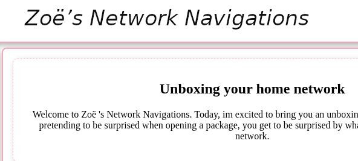

Zoë Coolbaugh
Home
Portfolio
Projects
Web Project 4: E-Book
Alice in Wonderland E-book
Web Project 3: My Favorite City
My Favorite City: Baldur's Gate

Web Project 2: CSS Webpage, 5 Sections
Zoe's network Navagations
Web Project 1: Resumé
Zoe's Resumé
Coding Labwork 3: Environmental Issue Website
How Oil Execs Coined "Carbon Footprint" to pass the blame to consumers